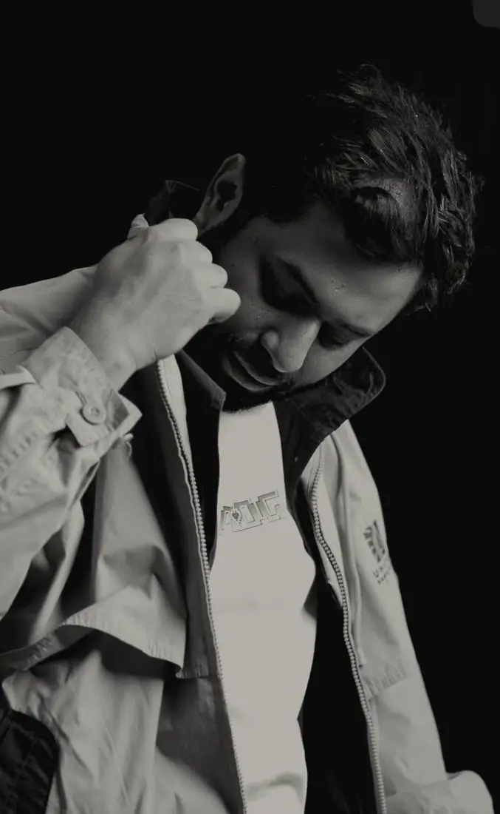
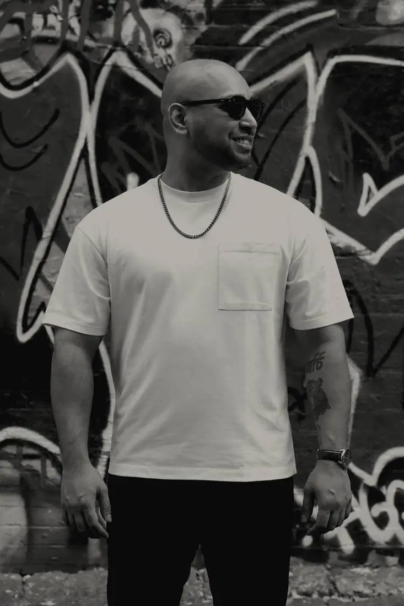

All Things Altered exists for those who never accepted things as they were. Where distortion is not error — but evolution. Where anger is not weakness — but direction. This is not anti-anything. This is beyond.
Not everything altered is broken.
Dark acid garage. Broken structures. Hypnotic rhythm.
One room. One sound, curated end to end. 808s and 303s. Acid that corrodes, garage that breaks its own grid, techno that stays low and does not let go. Leftfield where it earns it.
It runs from daylight into starlight. The early hours are slow and wide. By dark the room is sealed and the patterns tighten. Nothing is played to be recognised. Everything is played to change the room.
Aayna is an Indian DJ and producer whose work orbits the Roland TB-303. She reworks the acid house architecture of the 1980s and 1990s through house, electro, breaks, UK garage, IDM and left-field forms. She has played the main stages of Magnetic Fields and DGTL India, plus Echoes of Earth in Bangalore, Ziro Festival and Grasslands in Nepal. Keep Hush has carried her mixes; her Boiler Room set is on YouTube.

OMDG is a Dhaka DJ, producer and promoter who has spent a decade building the infrastructure his own scene needed. Active since 2014, he co-founded Breakfast Club Dhaka, Farmhaus, Rumours and Socials, and BOFA, one of the first YouTube channels to document Bangladeshi electronic artists. He was featured in the inaugural MIXMAG Dhaka episode. He has played across India, Sri Lanka and Kenya, and released as OMDG × Mana on AH Digital.
shadYman came up through Cat House Melbourne, the techno collective that shaped his sound: dark, hard, functional. Since 2018 he has shared stages with Amotik, Setaoc Mass, Cleric, Lewis Fautzi, Takaaki Itoh and Phase. He then franchised Cat House to Dhaka with a small group of friends, importing the format rather than just the records.

AASHNAi, also known as NAI, was among the first femme DJs in the Dhaka underground. DJ, producer and multimedia artist working across leftfield techno, bass, experimental club, neo-trance and noise. She has appeared on Keep Hush Bangladesh and Nepal with Bhai Bhai Soundsystem, shared lineups with Jai Wolf, KISSNUKA and Joi Soundsystem, and played Outerspace Kochi, the Shinsaibashi circuit and Westharlem Kyoto alongside Manchineel, Kazushi and Lomax. Her EP AJNA landed in 2025.

The Brown Testament is Seeham, a Bangladesh-American DJ and founder splitting time between Dhaka and Washington DC. He founded Elysium Affair, SYM Society, Soundesh and Altitude, and runs Nobo Festival and the Matcha Society series. He has played Brooklyn Monarch, Vagalume Tulum, Do Not Sit On the Furniture, Members LA and SXSW, and opened for Guy J, Yokoo, Dosem, Yulia Niko, Mahmut Orhan and Jeremy Olander.

No phone. No filming.
We cover your lens at the gate.
Your phone stays with you and works normally. Messages, calls, whatever you need. The camera is the only thing we close, and it stays closed until you leave.
We are asking for one day. A room full of people filming is a room full of people watching themselves, and nobody dances properly through a lens.
You will not miss anything. Our photographers work from the afternoon through to close, and the full set goes out afterwards on a private link. The people who were there see it first.
The moment is kept. You just do not have to be the one keeping it.
No alcohol. No substances.
The room is dry. Zero tolerance, no warnings.
Nothing comes in. Bags are checked at the gate. Anything found is confiscated and the person holding it does not enter.
Anyone found using or carrying inside the room is removed. No refund. No re-entry. No discussion at the door.
Arrive clear. The music is the substance.
All black.
One colour. No exceptions.
Black from head to foot. Not a costume, a uniform. When everyone wears the same thing, nobody is looking at what anyone is wearing. The room turns into one body and the light does the rest.
Wear what you can move in. Shoes you can stand in until half past midnight. Leave anything that catches light at home.
Buy tickets.
Every request to buy tickets is read and approved by hand. Registration is the only way in.
We hold the right to say no.
Break the house rules and you do not come in. Or you leave.

